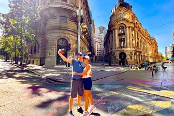
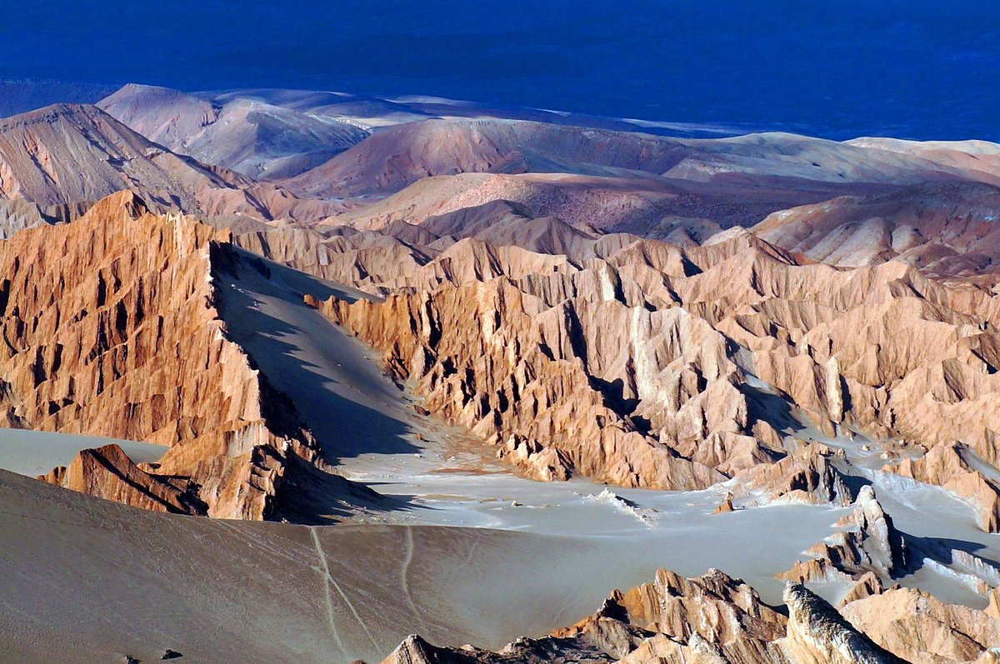
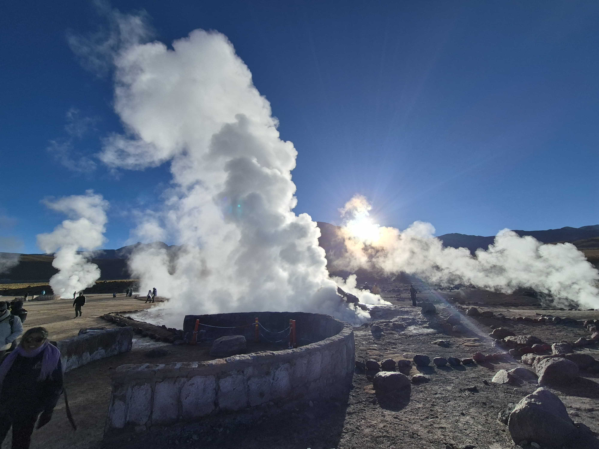
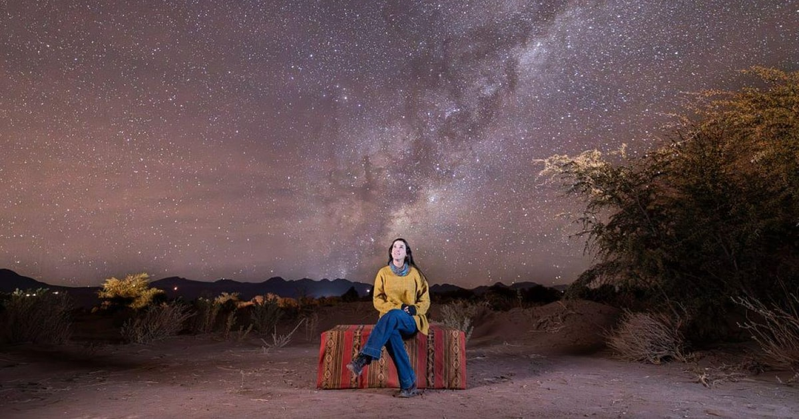
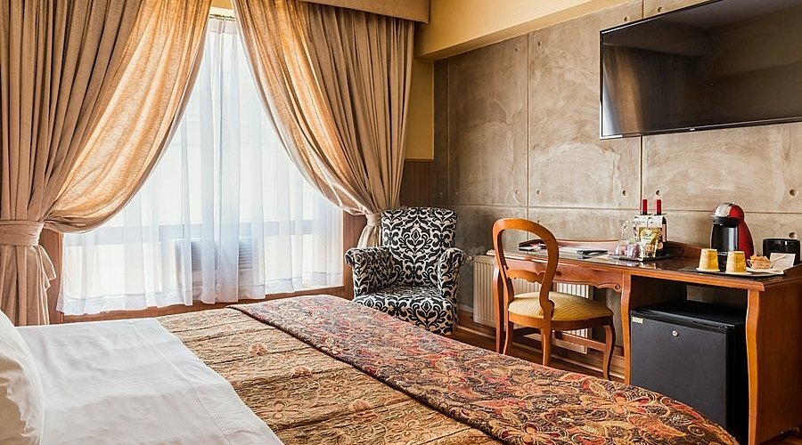

5 días / 4 noches · Cultura y paisajes del desierto · Vuelos opcionales
Información del paquete
Duración5 días / 4 noches
DestinosSantiago y San Pedro de Atacama, Chile
Hoteles1 noche Santiago + 3 noches Atacama
CategoríasTurista 3, Primera 4 o Lujo 5 estrellas
IdiomaEspañol · otros idiomas a solicitud
VuelosOpcionales · no incluidos en la tarifa
DificultadModerada · actividades en altura
Tipo de viajeCiudad, cultura y naturaleza
Ideal paraParejas, familias y grupos de amigos
RecomendacionesRopa por capas, protector solar y calzado cómodo
Descubre Santiago y Atacama
Combina una visita a Santiago con los paisajes extraordinarios de San Pedro de Atacama: el Valle de la Luna, los Géiseres del Tatio y las lagunas del altiplano.
El precio base comprende el programa terrestre y alojamiento según categoría. Los vuelos no están incluidos: puedes elegir por separado los tramos Santiago–Calama–Santiago durante la reserva. El viaje hasta Santiago también se contrata por separado.
Galería Santiago y Atacama

Santiago de Chile

Valle de la Luna, Atacama

Géiseres del Tatio

Observación astronómica en Atacama

Hotel Panamericano Santiago
Itinerario día a día
Día 1
Llegada a Santiago y recorrido por la ciudad
Recepción en el aeropuerto, traslado al hotel y primer encuentro con la capital chilena.
Llegada al aeropuerto de Santiago · Recepción y traslado al hotel, según la hora real del vuelo.
Check-in y tiempo de descanso · Ingreso a la habitación según disponibilidad del hotel.
Recorrido panorámico por Santiago · Visita por sectores representativos de la ciudad, si el vuelo de llegada lo permite.
Tiempo libre · Cena por cuenta propia y primera noche en Santiago.
Alojamiento: 1 noche en Santiago · comidas no especificadas no incluidas.
Día 2
Santiago → Calama y Valle de la Luna
Vuelo interno opcional a Calama y traslado a San Pedro de Atacama para conocer el Valle de la Luna.
Traslado al aeropuerto de Santiago · Recogida coordinada con la salida del vuelo interno seleccionado.
Vuelo Santiago (SCL) → Calama (CJC) · No incluido en el precio base; puedes añadirlo en la reserva.
Recepción en Calama y traslado a San Pedro · Viaje terrestre de aproximadamente 1 h 15 a 1 h 30.
Llegada y descanso · Almuerzo libre; registro en el hotel según horario y disponibilidad.
Excursión al Valle de la Luna · Recorrido por formaciones del desierto y miradores autorizados, si el vuelo permite realizarlo.
Regreso a San Pedro · Tiempo libre y noche en San Pedro de Atacama.
Alojamiento: San Pedro de Atacama · desayuno según servicio hotelero. La salida al Valle de la Luna depende de la llegada del vuelo.
Día 3
Desierto de Atacama y observación astronómica
Tiempo para descubrir el entorno del oasis y disfrutar de una experiencia bajo el cielo atacameño.
Desayuno en el hotel · Inicio tranquilo de la jornada.
Recorrido por el entorno de San Pedro · Visita y tiempo para conocer el pueblo y sus paisajes, según programación local.
Almuerzo libre y descanso · Tiempo personal para aclimatarte a la altura y al clima.
Experiencia de observación astronómica · Actividad con telescopios, condicionada por nubosidad, fase lunar y operación disponible.
Regreso al hotel · Segunda noche en San Pedro de Atacama.
Alojamiento: San Pedro de Atacama · la astronomía puede cambiar de horario por condiciones del cielo.
Día 4
Géiseres del Tatio y lagunas altiplánicas
Una jornada de contrastes, desde el amanecer geotérmico hasta los paisajes de altura.
Salida desde el hotel · Recogida temprana; desayuno para llevar cuando corresponda.
Géiseres del Tatio · Caminata guiada por los sectores autorizados del campo geotérmico.
Regreso por el altiplano · Paradas panorámicas según accesos y condiciones del trayecto.
Pausa y almuerzo libre · Regreso o descanso, según la combinación de excursiones.
Lagunas altiplánicas y paisajes andinos · Visita según recorridos confirmados, accesos, altura y tiempo disponible.
Regreso a San Pedro · Tercera noche en el hotel de Atacama.
Alojamiento: San Pedro de Atacama · el recorrido y horarios se ajustan a la accesibilidad y seguridad en altura.
Día 5
Traslado a Calama y regreso opcional a Santiago
Despedida de San Pedro de Atacama y traslado al aeropuerto para tu vuelo de regreso.
Desayuno · Según horario de salida contratado.
Check-out y tiempo libre · Coordinación del equipaje y de la recogida.
Traslado San Pedro → Aeropuerto de Calama · Traslado terrestre coordinado con antelación a la salida del vuelo.
Vuelo Calama (CJC) → Santiago (SCL) · Opcional y no incluido en la tarifa terrestre.
Fin del programa · Los vuelos posteriores desde Santiago se cotizan aparte si los necesitas.
Alojamiento: fin del programa · desayuno según horario del hotel.
Alojamiento incluido
El programa contempla una noche en Santiago y tres noches en San Pedro de Atacama, con desayuno según la categoría elegida.
Podrás elegir entre las categorías Turista (3 estrellas), Primera (4 estrellas) y Lujo (5 estrellas). La confirmación de los hoteles dependerá de la disponibilidad. Los cambios a otros hoteles en distintas ciudades requieren cotización individual.
Qué incluye
Alojamiento: 1 noche Santiago + 3 noches San Pedro
Accesos a parques cuando no se indiquen expresamente
Comidas no especificadas y gastos personales
Antes de reservar
Los vuelos internos deben ser compatibles con el traslado y las excursiones. Al ser un recorrido por dos ciudades, las propuestas de sustitución de hotel se preparan individualmente. La tarifa terrestre es fija para la categoría y ocupación seleccionadas. Los vuelos internos e internacionales no están incluidos; puedes agregar los internos a tu reserva o gestionarlos por tu cuenta.
¿Desde dónde viajas?
Ajustamos precios de referencia, salidas y recomendaciones según tu origen.